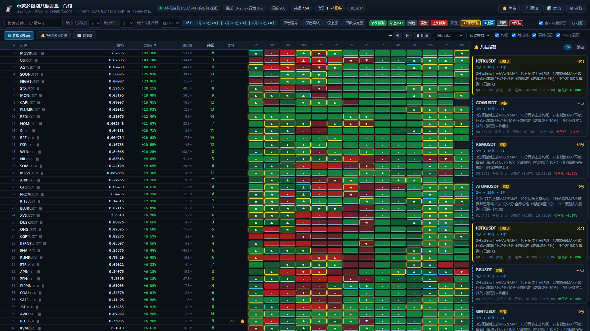
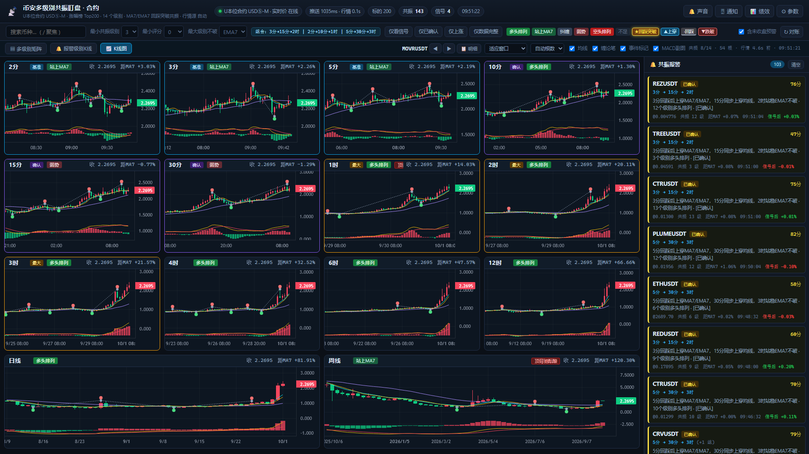
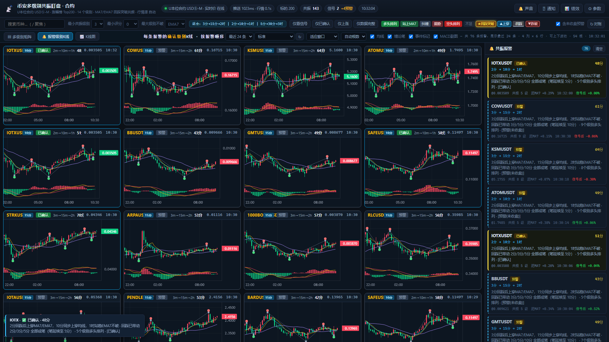
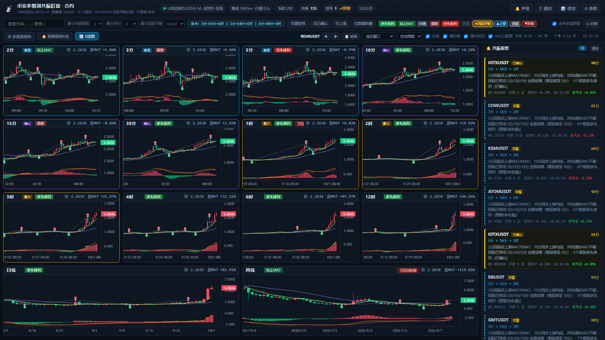

按 24h 涨幅榜 前 200 个标的 × 14 个级别实时盯盘，用「固定级别组合 + 回踩突破 MA7/EMA7 + 缠论背驰/成笔链」自动找出共振标的，并推送到钉钉。

同一套数据，三种看盘方式。


3m>15m>2h 画 15分，
5m>30m>3h 画 30分），严格按提醒顺序排列。
这正是触发那条报警的级别，一眼就能看出当时到底长什么样。

级别分组是固定三元组，不是相邻级别。
| 组合 | 基准级别 | 确认级别 | 最大级别 |
|---|---|---|---|
3m > 15m > 2h | 3分 | 15分 | 2时 |
2m > 10m > 1h | 2分 | 10分 | 1时 |
5m > 30m > 3h | 5分 | 30分 | 3时 |
先回踩触及 MA7（回踩），随后收盘价上穿 MA7 与 EMA7，并站在均线上方。
确认级别在最近几根K线内也上穿 MA7 —— 也就是「临近级别也上穿均线」。
最大级别收盘价需站在 EMA7/MA7 与 MA25 之上，且不处于空头排列。
14 个级别里至少 3 个处于严格多头排列（收 > MA7 > MA25 且 MA7 上行）。
均线只能看出「位置」，看不出「动能是不是要衰竭了」。这两道过滤用缠论补上。
包含处理 → 分型 → 标准笔（顶底之间至少 5 根K线）→ MACD 红柱面积对比。 当前这一笔还没走完，但价格已越过前一同向笔的极值、而累计 MACD 面积反而更小 → 判定动能衰竭，拦下该信号。
只让最小级别成笔的回调是浅回调，撑不起大级别的延续。 要算作 30分 笔延续，必须让 5分、10分、15分全部成笔 —— 即从基准级别到确认级别之间（不含确认级别）的所有级别。
| 级别组合 | 必须全部成笔 | 回测保留率 |
|---|---|---|
5m>30m>3h | 5m / 10m / 15m | 50 → 8 |
2m>10m>1h | 2m / 3m / 5m | 43 → 17 |
3m>15m>2h | 3m / 5m / 10m | 47 → 10 |
判定：某级别的「最近一个完成的向下笔」的底，必须落在基准级别回调起点之后。
140 条基线信号里，只要求成笔保留 25.0%；再加上「链上各级别都站上 MA7」保留 17.9%。
卡住的总是紧挨确认级别的那一级（30分组卡 10分、10分组卡 5分）—— 它的笔最长、最难成。
5分回踩后上穿MA7/EMA7，30分同步上穿均线，3时站稳EMA7不破
· 回踩已带动 5分/10分/15分 全部成笔（笔延续至 15分）
· 4个级别多头排列 · [预警(未收盘)]低延迟的关键在于怎么拿行情，以及别把权重打爆。
合约走 !bookTicker 全市场最优买卖价驱动K线形成，K线在边界处 1~2 秒内判定收盘。该流不消耗权重。
滚动拉取官方K线修正真实 OHLCV。首轮回填 300 根，之后用 99 根（权重 1）合并式写入，序列随运行时间累积而不多花权重。
用响应头 x-mbx-used-weight-1m 实时校准，按官方队列平滑请求，429/418 自动退避。
合约权重预算 2400/分钟，实测稳态约 400/2400，留足余量应对突发。
需要 Node.js 18+（用到了内置 fetch 与 WebSocket）。无需 npm install。
git clone https://github.com/tusiyivip-source/binance-resonance-monitor.git
cd binance-resonance-monitor
node server.js :: 默认 = U本位合约
set MARKET=spot && node server.js :: 切回现货浏览器打开 http://127.0.0.1:8848。首次启动约 1~2 分钟在权重预算内渐进播种 200 标的 × 12 个原生周期的历史K线，播种期间面板已可用。
access_token（加签密钥可选）→
启用 → 发送测试消息。钉钉机器人硬限 20 条/分钟，所以信号会先在聚合窗口内合并成一条再推。
所有结论都有可复现的脚本，不是「跑通就算」。
| 测试 | 项数 | 覆盖内容 |
|---|---|---|
tools/verify.mjs | 98 | K线合成对照币安原生、指标、共振逻辑、缠论背驰、成笔链、序列合并 |
tools/verify-push.mjs | 41 | 钉钉加签/聚合/限流/重试（Mock 服务端独立重算 HMAC 验签） |
tools/uitest.mjs | 91 | 真实 Chrome 驱动：布局、交互、图表绘制像素、滚动、tooltip |
合计 230 项。测试本身也踩过不少坑：跨脚本顶层重名让整个脚本不执行、改图表尺寸会重置十字光标、 断言依赖某一瞬间的采样导致假失败……这些都记在 README 的「注意事项」里。
binance-resonance-monitor/
├── server.js 服务入口（HTTP + SSE + 定时器）
├── src/
│ ├── config.js 级别定义 / 市场档案 / 默认参数
│ ├── rest.js 令牌桶 + 权重调速 + 429/418 退避
│ ├── market.js 涨幅榜前 200 / 订阅 / 播种 / 对账
│ ├── series.js K线序列（合成、指标、滚动合并、缠论缓存）
│ ├── indicators.js SMA / EMA / MACD
│ ├── chan.js 缠论：包含处理 / 分型 / 标准笔 / MACD 面积背驰
│ ├── signals.js 共振判定 + 背驰过滤 + 回踩成笔链
│ ├── engine.js 每秒扫描、快照、报警
│ ├── tickfeed.js 合约实时价驱动（!bookTicker + REST 修正）
│ ├── push.js 钉钉推送（加签 / 聚合 / 限流退避 / 重试）
│ └── tracker.js 信号绩效追踪（+1h/+4h/+24h 实际结算）
├── public/ 前端（index.html / app.js / chart.js / style.css）
│ └── vendor/ lightweight-charts.js（本地化，不走 CDN）
├── tools/ 测试 / 回测 / 探测脚本
└── docs/ ← 本页